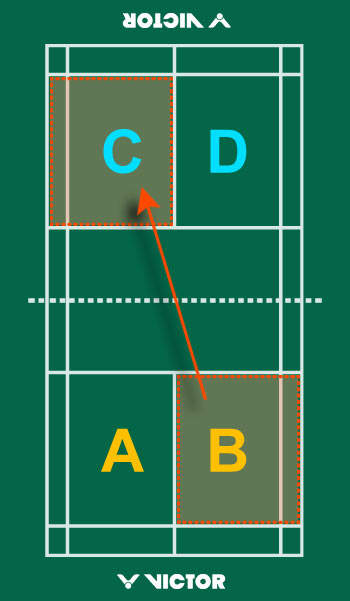

HomePage
HomePage
Scoring System
- A match consists of the best of 3 games of 21 points.
- Every time there is a serve – there is a point scored.
- The side winning a rally adds a point to its score.
- At 20 all, the side which gains a 2 point lead first, wins that game.
- At 29 all, the side scoring the 30th point, wins that game.
- The side winning a game serves first in the next game.
Interval and Change of Ends
- When the leading score reaches 11 points, players have a 60 second interval.
- A 2 minute interval between each game is allowed.
- In the third game, players change ends when the leading score reaches 11 points.
Singles
- At the beginning of the game (0-0) and when the server’s score is even, the server serves from the right service court. When the server’s score is odd, the server serves from the left service court.
- If the server wins a rally, the server scores a point and then serves again from the alternate service court.
- If the receiver wins a rally, the receiver scores a point and becomes the new server. They serve from the appropriate service court – left if their score is odd, and right if it is even.

Doubles
- A side has only one ‘service’.
- The service passes consecutively to the players as shown in the diagram.
- At the beginning of the game and when the score is even, the server serves from the right service court. When it is odd, the server serves from the left court.
- If the serving side wins a rally, the serving side scores a point and the same server serves again from the alternate service court.
- If the receiving side wins a rally, the receiving side scores a point. The receiving side becomes the new serving side.
- The players do not change their respective service courts until they win a point when their side is serving.
- If players commit an error in the service court, the error is corrected when the mistake is discovered.
- In a doubles match between A & B against C & D. A & B won the toss and decided to serve. A to serve to C. A shall be the initial server while C shall be the initial receiver.
EXAMPLES of servicing in a doubles match
When score is "Love All"
- Service Court: Right Service Court. Being the score of the serving side is even.
- Server: A
- Receiver: C
When score is "1-0"
- Course of action: A & B win a point. A & B will change service courts. A serves again from Left service court. C & D will stay in the same service courts.
- Service Court: Left Service Court. Being the score of the serving side is odd.
- Server: A
- Receiver: D
When score is "1-1"
- Course of action: C & D win a point and also the right to serve. Nobody will change their respective service courts.
- Service Court: Left Service Court. Being the score of the serving side is odd.
- Server: D
- Receiver: A

When score is "2-1"
- Course of action: A & B win a point and also the right to serve. Nobody will change their respective service courts.
- Service Court: Right Service Court. Being the score of the serving side is even.
- Server: B
- Receiver: C
When score is "2-2"
- Course of action: C & D win a point and also the right to serve. Nobody will change their respective service courts.
- Service Court: Right Service Court. Being the score of the serving side is even.
- Server: C
- Receiver: B
When score is "2-3"
- Course of action: C & D win a point. C & D will change service courts. C serves from Left service court. A & B will stay in the same service courts.
- Service Court: Left Service Court. Being the score of the serving side is odd.
- Server: C
- Receiver: A
When score is "3-3"
- Course of action: A & B win a point and also the right to serve. Nobody will change their respective service courts.
- Service Court: Left Service Court. Being the score of the serving side is odd.
- Server: A
- Receiver: C
When score is "4-3"
- Course of action: A & B win a point. A & B will change service courts. A serves again from Right service court. C & D will stay in the same service courts.
- Service Court: Right Service Court. Being the score of the serving side is even.
- Server: A
- Receiver: D